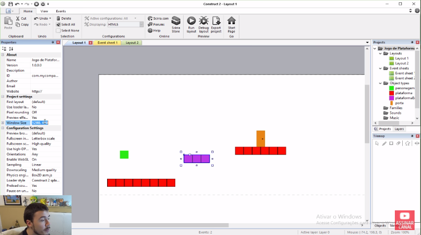
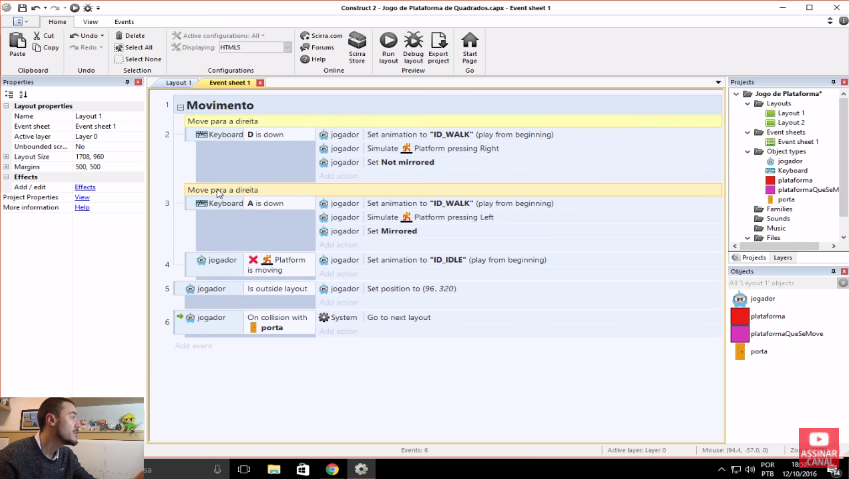
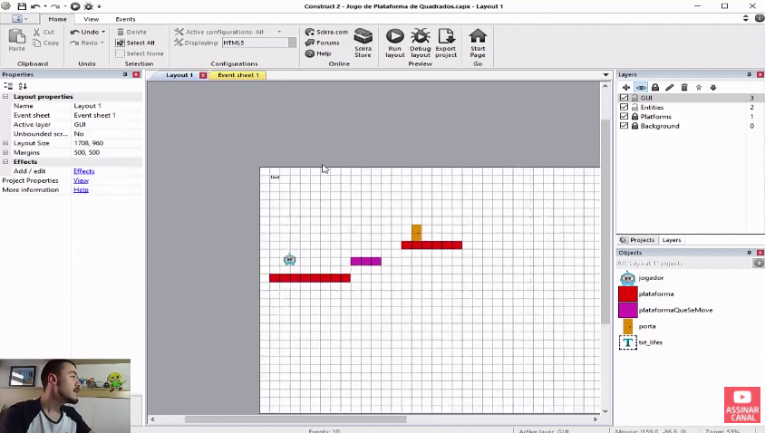
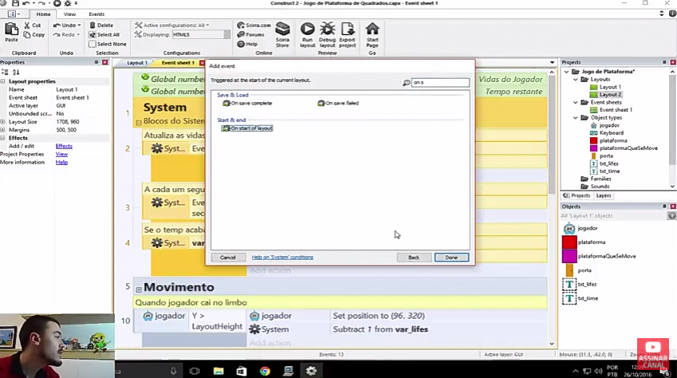
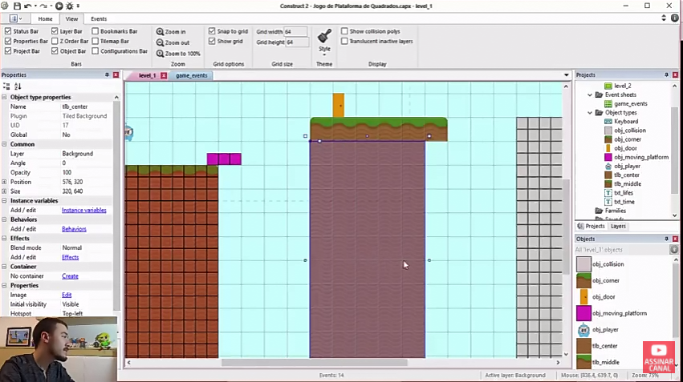
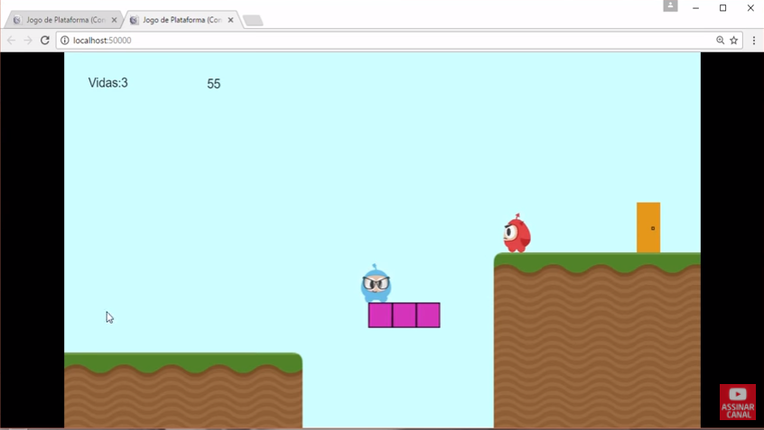
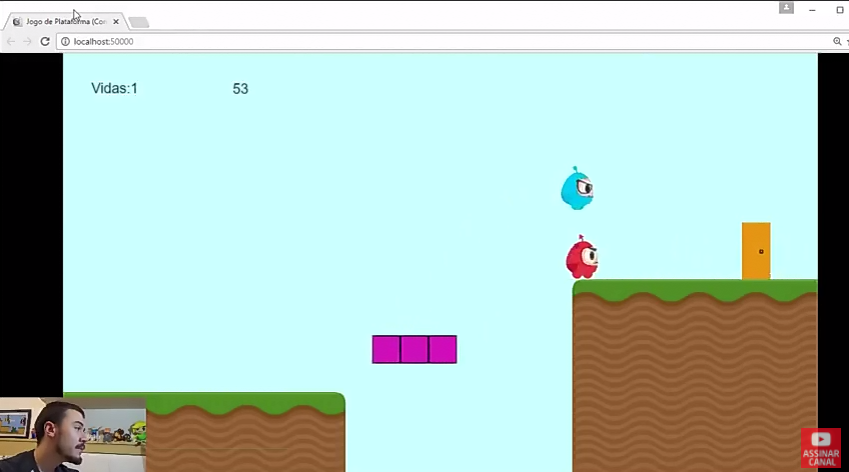
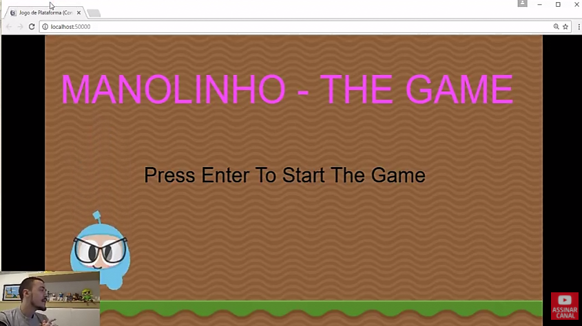
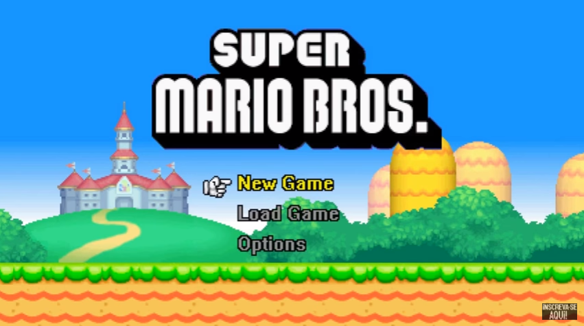

|  |
One Day Code. Como Criar Jogo De Plataforma (Baixar Construct 2 E Primeiros Passos) - Tutorial Construct 2 #01.Disponível em: < https://www.youtube.com/watch?v=jh_c4c72LrE&list=PLGgRtySq3SDMxXs_xjymTT_alKtCSkGZH >. Acessado em agosto de 2017. |
|  |
One Day Code. Como Criar Um Jogo De Plataforma (Animação de Sprites 2D) - Tutorial Construct 2 #02.Disponível em: < https://www.youtube.com/watch?v=ITCmOhv3-hc&list=PLGgRtySq3SDMxXs_xjymTT_alKtCSkGZH&index=3 > Acessado em agosto de 2017. |
|  |
One Day Code. Como Criar Um Jogo De Plataforma (Contador De Vidas) - Tutorial Construct 2 #03.Disponível em: < https://www.youtube.com/watch?v=6hr4jAW9AUU&index=5&list=PLGgRtySq3SDMxXs_xjymTT_alKtCSkGZH >. Acessado em agosto de 2017. |
|  |
One Day Code. Como Criar Um Jogo De Plataforma (Contador de Tempo) - Tutorial Construct 2 #04.Disponível em: < https://www.youtube.com/watch?v=m4p00SHLZwQ&index=7&list=PLGgRtySq3SDMxXs_xjymTT_alKtCSkGZH >. Acessado em agosto de 2017. |
|  |
One Day Code. Como Criar Um Jogo De Plataforma (Plano de Fundo Background) - Tutorial Construct 2 #05.Disponível em: < https://www.youtube.com/watch?v=ssMHfBFHUS0&list=PLGgRtySq3SDMxXs_xjymTT_alKtCSkGZH&index=9 >. Acessado em agosto de 2017. |
|  |
One Day Code. Como Criar um Jogo de Plataforma (Inimigos de Plataforma) - Construct 2 #06. Disponível em: < https://www.youtube.com/watch?v=Bnl8fPxOprg&list=PLGgRtySq3SDMxXs_xjymTT_alKtCSkGZH&index=11 >. Acessado em agosto de 2017. |
|  |
One Day Code. Como Criar Um Jogo De Plataforma (Pular Em Inimigos) - Tutorial Construct 2 #07. Disponível em: < https://www.youtube.com/watch?v=6sKht-VsKIc&list=PLGgRtySq3SDMxXs_xjymTT_alKtCSkGZH&index=13 >. Acessado em agosto de 2017. |
|  |
One Day Code. Como Criar Um Jogo De Plataforma (Menu Inicial) - Tutorial Construct 2 #09. Disponível em: < https://www.youtube.com/watch?v=cxu3sMvNZJ4&list=PLGgRtySq3SDMxXs_xjymTT_alKtCSkGZH&index=17 >. Acessado em agosto de 2017. |
|  |
Gold Skull Tutoriais - Criação de Jogos. CONSTRUCT 2 - COMO CRIAR UMA TELA INICIAL COM MENU. Disponível em: < https://www.youtube.com/watch?v=Kxdxq5tuT3U >. Acessado em agosto de 2017. |